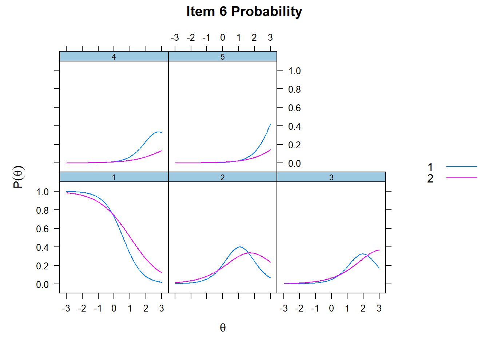
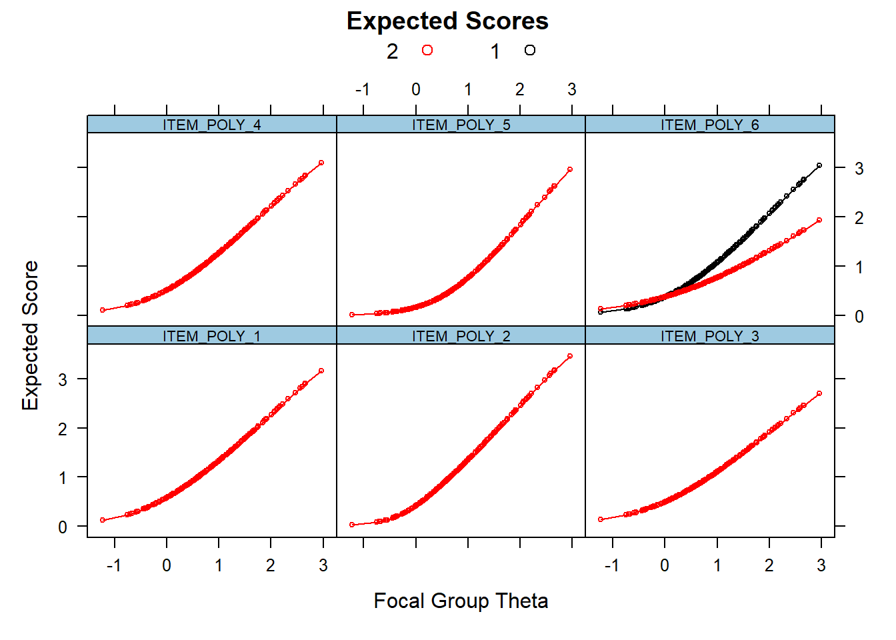
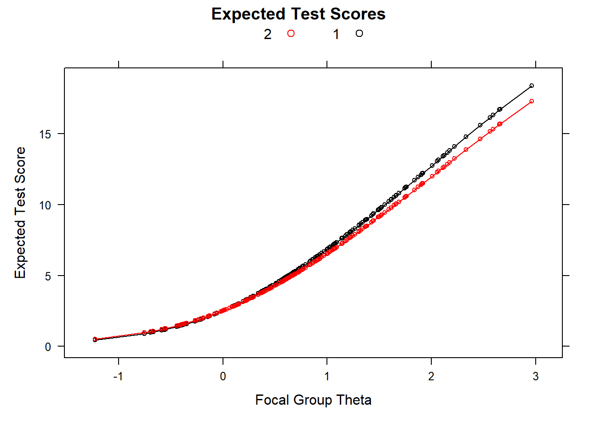

Differential Item Functioning per item politomici
La procedura per lo studio dell’invarianza a livello di item calibrati tramite il modello graded è la medesima illustrata per il modello 2PL.
Di seguito verrà illustrata l’invarianza di genere della scala TEST.POLY, utilizzando la varibile SESSO (1=maschio, 2=femmina).
Per prima cosa selezioniamo la variabile gruppo.
Selezioniamo poi gli item sui quali condurre l’invarianza.
Definiamo poi la struttura fattoriale, come già fatto in precedenza.
Infine, creiamo un oggetto contenente il tipo di modello, per non doverlo inserire in ogni passaggio.
Stima dei parametri nei due gruppi
Procediamo alla stima dei parametri degli item nel gruppo di maschi inserendo l’etichetta ‘1’ all’interno della voce GRUPPO (GRUPPO==1).
mod.group1<-filter(item.DIF.graded, GRUPPO=='1')%>% #Inserire il gruppo
mirt(model=fct.str.DIF, itemtype = tipo.mod) ##
Iteration: 1, Log-Lik: -2258.829, Max-Change: 1.87997
Iteration: 2, Log-Lik: -2204.298, Max-Change: 0.71480
Iteration: 3, Log-Lik: -2190.205, Max-Change: 0.25293
Iteration: 4, Log-Lik: -2185.405, Max-Change: 0.17363
Iteration: 5, Log-Lik: -2183.512, Max-Change: 0.13165
Iteration: 6, Log-Lik: -2182.675, Max-Change: 0.09156
Iteration: 7, Log-Lik: -2182.133, Max-Change: 0.06461
Iteration: 8, Log-Lik: -2182.007, Max-Change: 0.03479
Iteration: 9, Log-Lik: -2181.939, Max-Change: 0.02677
Iteration: 10, Log-Lik: -2181.867, Max-Change: 0.01570
Iteration: 11, Log-Lik: -2181.852, Max-Change: 0.00664
Iteration: 12, Log-Lik: -2181.844, Max-Change: 0.00561
Iteration: 13, Log-Lik: -2181.837, Max-Change: 0.00298
Iteration: 14, Log-Lik: -2181.834, Max-Change: 0.00202
Iteration: 15, Log-Lik: -2181.833, Max-Change: 0.00175
Iteration: 16, Log-Lik: -2181.831, Max-Change: 0.00090
Iteration: 17, Log-Lik: -2181.831, Max-Change: 0.00106
Iteration: 18, Log-Lik: -2181.831, Max-Change: 0.00069
Iteration: 19, Log-Lik: -2181.830, Max-Change: 0.00067
Iteration: 20, Log-Lik: -2181.830, Max-Change: 0.00058
Iteration: 21, Log-Lik: -2181.830, Max-Change: 0.00051
Iteration: 22, Log-Lik: -2181.830, Max-Change: 0.00011
Iteration: 23, Log-Lik: -2181.830, Max-Change: 0.00033
Iteration: 24, Log-Lik: -2181.830, Max-Change: 0.00036
Iteration: 25, Log-Lik: -2181.830, Max-Change: 0.00013
Iteration: 26, Log-Lik: -2181.830, Max-Change: 0.00028
Iteration: 27, Log-Lik: -2181.830, Max-Change: 0.00010## $items
## a b1 b2 b3 b4
## ITEM_POLY_1 1.650 0.164 1.240 2.184 2.874
## ITEM_POLY_2 2.636 0.181 1.107 2.087 3.325
## ITEM_POLY_3 1.302 0.670 1.736 2.668 3.451
## ITEM_POLY_4 1.481 0.343 1.427 2.316 3.348
## ITEM_POLY_5 2.404 0.922 1.686 2.395 3.482
## ITEM_POLY_6 1.651 0.576 1.589 2.398 3.241
##
## $means
## F1
## 0
##
## $cov
## F1
## F1 1Stimiamo poi i parametri nel gruppo delle femmine (GRUPPO==2).
mod.group2<-filter(item.DIF.graded, GRUPPO=='2')%>% #Inserire il gruppo
mirt(model=fct.str.DIF, itemtype = tipo.mod) ##
Iteration: 1, Log-Lik: -2371.369, Max-Change: 1.15938
Iteration: 2, Log-Lik: -2308.183, Max-Change: 0.68798
Iteration: 3, Log-Lik: -2290.871, Max-Change: 0.46868
Iteration: 4, Log-Lik: -2284.622, Max-Change: 0.27333
Iteration: 5, Log-Lik: -2282.229, Max-Change: 0.17879
Iteration: 6, Log-Lik: -2281.174, Max-Change: 0.09382
Iteration: 7, Log-Lik: -2280.624, Max-Change: 0.06485
Iteration: 8, Log-Lik: -2280.391, Max-Change: 0.04768
Iteration: 9, Log-Lik: -2280.259, Max-Change: 0.03492
Iteration: 10, Log-Lik: -2280.109, Max-Change: 0.01516
Iteration: 11, Log-Lik: -2280.086, Max-Change: 0.01008
Iteration: 12, Log-Lik: -2280.070, Max-Change: 0.00740
Iteration: 13, Log-Lik: -2280.058, Max-Change: 0.00863
Iteration: 14, Log-Lik: -2280.051, Max-Change: 0.00441
Iteration: 15, Log-Lik: -2280.046, Max-Change: 0.00350
Iteration: 16, Log-Lik: -2280.037, Max-Change: 0.00182
Iteration: 17, Log-Lik: -2280.036, Max-Change: 0.00137
Iteration: 18, Log-Lik: -2280.036, Max-Change: 0.00169
Iteration: 19, Log-Lik: -2280.035, Max-Change: 0.00107
Iteration: 20, Log-Lik: -2280.035, Max-Change: 0.00082
Iteration: 21, Log-Lik: -2280.035, Max-Change: 0.00065
Iteration: 22, Log-Lik: -2280.034, Max-Change: 0.00048
Iteration: 23, Log-Lik: -2280.034, Max-Change: 0.00032
Iteration: 24, Log-Lik: -2280.034, Max-Change: 0.00042
Iteration: 25, Log-Lik: -2280.034, Max-Change: 0.00030
Iteration: 26, Log-Lik: -2280.034, Max-Change: 0.00038
Iteration: 27, Log-Lik: -2280.034, Max-Change: 0.00029
Iteration: 28, Log-Lik: -2280.034, Max-Change: 0.00017
Iteration: 29, Log-Lik: -2280.034, Max-Change: 0.00030
Iteration: 30, Log-Lik: -2280.034, Max-Change: 0.00016
Iteration: 31, Log-Lik: -2280.034, Max-Change: 0.00011
Iteration: 32, Log-Lik: -2280.034, Max-Change: 0.00029
Iteration: 33, Log-Lik: -2280.034, Max-Change: 0.00010
Iteration: 34, Log-Lik: -2280.034, Max-Change: 0.00037
Iteration: 35, Log-Lik: -2280.034, Max-Change: 0.00030
Iteration: 36, Log-Lik: -2280.034, Max-Change: 0.00035
Iteration: 37, Log-Lik: -2280.034, Max-Change: 0.00022
Iteration: 38, Log-Lik: -2280.034, Max-Change: 0.00026
Iteration: 39, Log-Lik: -2280.034, Max-Change: 0.00021
Iteration: 40, Log-Lik: -2280.034, Max-Change: 0.00011
Iteration: 41, Log-Lik: -2280.034, Max-Change: 0.00024
Iteration: 42, Log-Lik: -2280.034, Max-Change: 0.00011
Iteration: 43, Log-Lik: -2280.034, Max-Change: 0.00007## $items
## a b1 b2 b3 b4
## ITEM_POLY_1 1.737 0.181 1.160 2.033 2.594
## ITEM_POLY_2 2.966 0.221 1.049 1.717 2.348
## ITEM_POLY_3 1.428 0.401 1.199 2.184 3.246
## ITEM_POLY_4 1.948 0.319 1.089 1.853 2.608
## ITEM_POLY_5 2.177 0.771 1.604 2.200 2.812
## ITEM_POLY_6 1.189 0.862 2.036 3.338 4.030
##
## $means
## F1
## 0
##
## $cov
## F1
## F1 1Primo step della procedura di purificazione
Procediamo poi con il primo step della procedura di purificazione, stimando un modello di partenza tramite la funzione multiplegroup(), dove nell’ argomento invariance =c() provvederemo a:
vincolare i parametri degli item essere uguali nei due gruppi (
colnames(item.DIF.graded));Fissare le medie a 0 nel gruppo di riferimento e a lasciarle libere nel gruppo focale (
'free_means');Fissare le varianze a 1 nel gruppo di riferimento e a lasciarle libere nel gruppo focale (
'free_var');
#Primo step della procedura di purificazione.
#Stima del modello di partenza
mod.dif.1<-multipleGroup(item.DIF.graded,model=fct.str.DIF,
itemtype =tipo.mod,group =GRUPPO,SE=TRUE,
invariance = c(colnames(item.DIF.graded),
'free_means', 'free_var'))##
Iteration: 1, Log-Lik: -4645.078, Max-Change: 1.24819
Iteration: 2, Log-Lik: -4513.557, Max-Change: 0.70263
Iteration: 3, Log-Lik: -4489.304, Max-Change: 0.37508
Iteration: 4, Log-Lik: -4483.992, Max-Change: 0.23986
Iteration: 5, Log-Lik: -4482.128, Max-Change: 0.14803
Iteration: 6, Log-Lik: -4481.215, Max-Change: 0.11593
Iteration: 7, Log-Lik: -4480.128, Max-Change: 0.06541
Iteration: 8, Log-Lik: -4479.787, Max-Change: 0.04103
Iteration: 9, Log-Lik: -4479.561, Max-Change: 0.03151
Iteration: 10, Log-Lik: -4479.277, Max-Change: 0.03881
Iteration: 11, Log-Lik: -4479.129, Max-Change: 0.02506
Iteration: 12, Log-Lik: -4479.026, Max-Change: 0.01979
Iteration: 13, Log-Lik: -4478.876, Max-Change: 0.04245
Iteration: 14, Log-Lik: -4478.734, Max-Change: 0.01965
Iteration: 15, Log-Lik: -4478.691, Max-Change: 0.01274
Iteration: 16, Log-Lik: -4478.660, Max-Change: 0.01060
Iteration: 17, Log-Lik: -4478.639, Max-Change: 0.00832
Iteration: 18, Log-Lik: -4478.622, Max-Change: 0.00712
Iteration: 19, Log-Lik: -4478.597, Max-Change: 0.01722
Iteration: 20, Log-Lik: -4478.570, Max-Change: 0.00782
Iteration: 21, Log-Lik: -4478.563, Max-Change: 0.00498
Iteration: 22, Log-Lik: -4478.558, Max-Change: 0.00395
Iteration: 23, Log-Lik: -4478.554, Max-Change: 0.00318
Iteration: 24, Log-Lik: -4478.552, Max-Change: 0.00274
Iteration: 25, Log-Lik: -4478.547, Max-Change: 0.00677
Iteration: 26, Log-Lik: -4478.543, Max-Change: 0.00307
Iteration: 27, Log-Lik: -4478.542, Max-Change: 0.00195
Iteration: 28, Log-Lik: -4478.541, Max-Change: 0.00156
Iteration: 29, Log-Lik: -4478.540, Max-Change: 0.00126
Iteration: 30, Log-Lik: -4478.540, Max-Change: 0.00108
Iteration: 31, Log-Lik: -4478.539, Max-Change: 0.00272
Iteration: 32, Log-Lik: -4478.539, Max-Change: 0.00122
Iteration: 33, Log-Lik: -4478.538, Max-Change: 0.00079
Iteration: 34, Log-Lik: -4478.538, Max-Change: 0.00064
Iteration: 35, Log-Lik: -4478.538, Max-Change: 0.00051
Iteration: 36, Log-Lik: -4478.538, Max-Change: 0.00044
Iteration: 37, Log-Lik: -4478.538, Max-Change: 0.00109
Iteration: 38, Log-Lik: -4478.538, Max-Change: 0.00049
Iteration: 39, Log-Lik: -4478.538, Max-Change: 0.00031
Iteration: 40, Log-Lik: -4478.538, Max-Change: 0.00028
Iteration: 41, Log-Lik: -4478.538, Max-Change: 0.00021
Iteration: 42, Log-Lik: -4478.538, Max-Change: 0.00018
Iteration: 43, Log-Lik: -4478.538, Max-Change: 0.00044
Iteration: 44, Log-Lik: -4478.538, Max-Change: 0.00019
Iteration: 45, Log-Lik: -4478.538, Max-Change: 0.00013
Iteration: 46, Log-Lik: -4478.538, Max-Change: 0.00012
Iteration: 47, Log-Lik: -4478.538, Max-Change: 0.00008
##
## Calculating information matrix...A partire da questo modello, procediamo a stimare il DIF al primo step di interazione tramite la funzione DIF(). Impostando la voce scheme='drop', procediamo rimuovendo i vincoli degli item uno ad uno per essere confrontati tramite il Chi-Quadro nei due gruppi.
Primamariamente, verifichiamo la possibile presenza di DIF nei parametri a (which.par = 'a1')
#DIF in a al primo step di purificazione
DIF(mod.dif.1,which.par = 'a1', simplify = TRUE, scheme = 'drop')## converged AIC SABIC HQ BIC X2 df p
## ITEM_POLY_1 TRUE 1.750 3.246 3.545 6.422 0.25 1 0.617
## ITEM_POLY_2 TRUE 1.837 3.334 3.633 6.509 0.163 1 0.687
## ITEM_POLY_3 TRUE 0.664 2.161 2.460 5.336 1.336 1 0.248
## ITEM_POLY_4 TRUE 0.467 1.963 2.263 5.139 1.533 1 0.216
## ITEM_POLY_5 TRUE 1.952 3.449 3.748 6.624 0.048 1 0.827
## ITEM_POLY_6 TRUE -7.632 -6.135 -5.836 -2.960 9.632 1 0.002Per quanto riguarda la capacità discriminativa, l’item 6 mostrava DIF al primo step di purificazione (\(X^2\)(1)=9.63 , p < .01).
Proseguiamo poi con la stima del DIF relativo alle soglie. Come per il modello 2PL anche in questo caso va utilizzato il parametro d. Inoltre, inserendo nella funzione which.par =c('d1', 'd2','d3','d4') andiamo a analizzare il DIF nelle soglie congiuntamente.
#DIF in a al primo step di purificazione
DIF(mod.dif.1,which.par =c('d1', 'd2','d3','d4'),
simplify = TRUE, scheme = 'drop')## converged AIC SABIC HQ BIC X2 df p
## ITEM_POLY_1 TRUE 7.579 13.565 14.763 26.267 0.421 4 0.981
## ITEM_POLY_2 TRUE 1.404 7.390 8.587 20.092 6.596 4 0.159
## ITEM_POLY_3 TRUE -0.431 5.555 6.753 18.257 8.431 4 0.077
## ITEM_POLY_4 TRUE 6.801 12.787 13.984 25.489 1.199 4 0.878
## ITEM_POLY_5 TRUE 4.346 10.332 11.529 23.034 3.654 4 0.455
## ITEM_POLY_6 TRUE 2.096 8.082 9.279 20.784 5.904 4 0.206Per quanto riguarda le soglie, nessun item mostrava DIF.
Secondo step della procedura di purificazione
Procediamo quindi con il secondo step della procedura di purificazione per confermare la possibile presenza di DIF nella capacità discriminativa dell’item 6.
Innanzitutto, definiamo gli item ancora.
#Definisco gli item ancora
itemnames <- colnames(item.DIF.graded)
item.ancora<- itemnames[c(1,2,3,4,5)] #Inserire gli item ancora
print(item.ancora)## [1] "ITEM_POLY_1" "ITEM_POLY_2" "ITEM_POLY_3" "ITEM_POLY_4" "ITEM_POLY_5"Proseguiamo poi creando un oggetto che contenga l’item candidato, ovvero il sesto.
#Definisco gli item candidati
item.candidati<- c(6) #Inserire gli item candidati
print(item.candidati) ## [1] 6Procediamo poi a creare un nuovo modello tramite la funzione multiplegroup() con i seguenti vincoli all’interno dell’argomento invariance=c():
i parametri degli item ancora fissati ad essere uguali nei due gruppi;
le medie e le varianze fissate a 0 e 1 nel gruppo focale e libere di essere stimate nel gruppo di riferimento.
#Secondo step della procedura di purificazione.
#Stima del modello
mod.dif.2<-multipleGroup(item.DIF.graded,model=fct.str.DIF,
itemtype =tipo.mod,group =GRUPPO,SE=TRUE,
invariance = c(item.ancora,
'free_means', 'free_var'))##
Iteration: 1, Log-Lik: -4645.078, Max-Change: 1.25701
Iteration: 2, Log-Lik: -4508.369, Max-Change: 0.70537
Iteration: 3, Log-Lik: -4481.891, Max-Change: 0.39169
Iteration: 4, Log-Lik: -4476.329, Max-Change: 0.23777
Iteration: 5, Log-Lik: -4474.665, Max-Change: 0.14305
Iteration: 6, Log-Lik: -4473.974, Max-Change: 0.11154
Iteration: 7, Log-Lik: -4473.249, Max-Change: 0.05102
Iteration: 8, Log-Lik: -4473.034, Max-Change: 0.03419
Iteration: 9, Log-Lik: -4472.881, Max-Change: 0.02755
Iteration: 10, Log-Lik: -4472.658, Max-Change: 0.04140
Iteration: 11, Log-Lik: -4472.538, Max-Change: 0.02394
Iteration: 12, Log-Lik: -4472.467, Max-Change: 0.01826
Iteration: 13, Log-Lik: -4472.364, Max-Change: 0.02813
Iteration: 14, Log-Lik: -4472.305, Max-Change: 0.01578
Iteration: 15, Log-Lik: -4472.273, Max-Change: 0.01187
Iteration: 16, Log-Lik: -4472.230, Max-Change: 0.01645
Iteration: 17, Log-Lik: -4472.206, Max-Change: 0.00989
Iteration: 18, Log-Lik: -4472.192, Max-Change: 0.00770
Iteration: 19, Log-Lik: -4472.170, Max-Change: 0.01314
Iteration: 20, Log-Lik: -4472.156, Max-Change: 0.00704
Iteration: 21, Log-Lik: -4472.149, Max-Change: 0.00517
Iteration: 22, Log-Lik: -4472.141, Max-Change: 0.00631
Iteration: 23, Log-Lik: -4472.137, Max-Change: 0.00411
Iteration: 24, Log-Lik: -4472.134, Max-Change: 0.00333
Iteration: 25, Log-Lik: -4472.130, Max-Change: 0.00739
Iteration: 26, Log-Lik: -4472.125, Max-Change: 0.00345
Iteration: 27, Log-Lik: -4472.124, Max-Change: 0.00232
Iteration: 28, Log-Lik: -4472.123, Max-Change: 0.00210
Iteration: 29, Log-Lik: -4472.122, Max-Change: 0.00161
Iteration: 30, Log-Lik: -4472.122, Max-Change: 0.00138
Iteration: 31, Log-Lik: -4472.121, Max-Change: 0.00341
Iteration: 32, Log-Lik: -4472.120, Max-Change: 0.00154
Iteration: 33, Log-Lik: -4472.119, Max-Change: 0.00101
Iteration: 34, Log-Lik: -4472.119, Max-Change: 0.00087
Iteration: 35, Log-Lik: -4472.119, Max-Change: 0.00068
Iteration: 36, Log-Lik: -4472.119, Max-Change: 0.00059
Iteration: 37, Log-Lik: -4472.119, Max-Change: 0.00145
Iteration: 38, Log-Lik: -4472.119, Max-Change: 0.00065
Iteration: 39, Log-Lik: -4472.119, Max-Change: 0.00043
Iteration: 40, Log-Lik: -4472.119, Max-Change: 0.00038
Iteration: 41, Log-Lik: -4472.119, Max-Change: 0.00029
Iteration: 42, Log-Lik: -4472.119, Max-Change: 0.00025
Iteration: 43, Log-Lik: -4472.119, Max-Change: 0.00060
Iteration: 44, Log-Lik: -4472.119, Max-Change: 0.00028
Iteration: 45, Log-Lik: -4472.119, Max-Change: 0.00018
Iteration: 46, Log-Lik: -4472.119, Max-Change: 0.00017
Iteration: 47, Log-Lik: -4472.119, Max-Change: 0.00013
Iteration: 48, Log-Lik: -4472.119, Max-Change: 0.00011
Iteration: 49, Log-Lik: -4472.119, Max-Change: 0.00025
Iteration: 50, Log-Lik: -4472.119, Max-Change: 0.00011
Iteration: 51, Log-Lik: -4472.119, Max-Change: 0.00008
##
## Calculating information matrix...Stiamiamo ora il DIF nella capacità discriminativa del solo item 6, utilizzando lo schema 'add'.
#DIF in a al secondo step di purificazione
DIF(mod.dif.2,which.par = 'a1', simplify = TRUE,
scheme = 'add', items2test = item.candidati)## converged AIC SABIC HQ BIC X2 df p
## ITEM_POLY_6 TRUE -4.934 -3.438 -3.138 -0.262 6.934 1 0.008Il DIF nella capacità discrimiativa dell’item 6 è stato confermato anche al secondo step della procedura di purificazione (\(X^2\)(1)=6.93 , p < .01), ad indicare che l’item riusultava essere discriminare meglio le differenze di tratto nei maschi (a=1.65) rispetto alle femmine (a=1.19).
Questo può essere anche analizzato graficamente tramite la funzione itemplot().

Effect size del DIF
Verifichiamo ora l’effect size del DIF nel parametro dell’item 6, tramite la procdura descritta da Meade (2010).
Effect size a livello di item
In primo luogo valutiamo l’effect size a livello di item, tramite gli indici e l’ispezione grafica.
## SIDS UIDS SIDN UIDN ESSD theta.of.max.D max.D mean.ES.foc mean.ES.ref
## item.1 0.000 0.000 0.0 0.000 0.000 -1.227 0.00 0.746 0.746
## item.2 0.000 0.000 0.0 0.000 0.000 -1.227 0.00 0.674 0.674
## item.3 0.000 0.000 0.0 0.000 0.000 -1.227 0.00 0.639 0.639
## item.4 0.000 0.000 0.0 0.000 0.000 -1.227 0.00 0.691 0.691
## item.5 0.000 0.000 0.0 0.000 0.000 -1.227 0.00 0.392 0.392
## item.6 -0.109 0.173 -0.1 0.155 -0.219 2.964 -1.11 0.463 0.572
Effect size a livello di test
Proseguiamo verificando l’impatto del DIF sull’intero test.
## Effect Size Value
## 1 STDS -0.10917912
## 2 UTDS 0.17281302
## 3 UETSDS 0.17281302
## 4 ETSSD -0.03021414
## 5 Starks.DTFR -0.10014410
## 6 UDTFR 0.15479671
## 7 UETSDN 0.15479671
## 8 theta.of.max.test.D 2.96352763
## 9 Test.Dmax -1.11033082